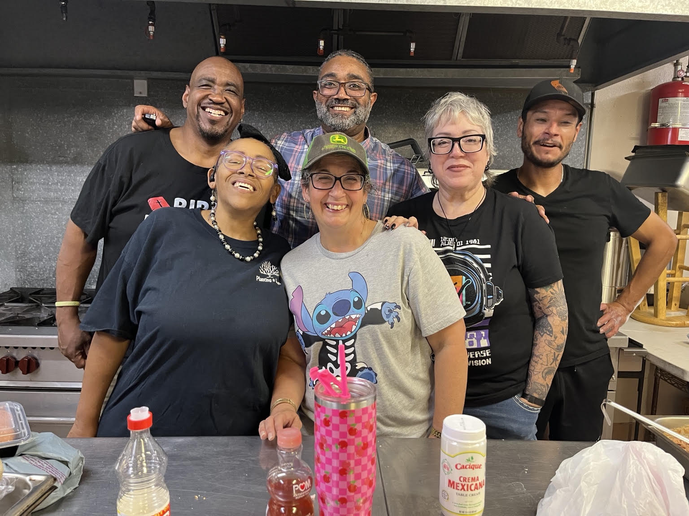
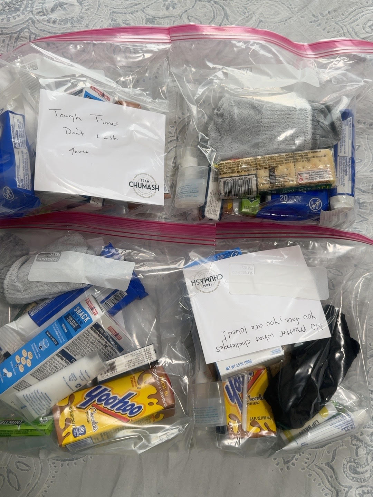

01
Street Outreach
Meeting neighbors where they are, listening without judgment, and sharing care packages and practical support.
Helping people experiencing homelessness in Lompoc rebuild their lives through compassion, dignity, and community support.

Planting a Seed is a Lompoc-based 501(c)(3) nonprofit dedicated to helping individuals experiencing homelessness rebuild their lives through compassion, dignity, and community support.
We believe everyone deserves to be seen, heard, and treated with respect. Through street outreach, nourishing meals, and connections to community resources, we meet people where they are and walk alongside them toward greater stability.
Our work begins with relationships and grows through practical support.
Meeting neighbors where they are, listening without judgment, and sharing care packages and practical support.
Providing meals that nourish the body while creating opportunities for connection, fellowship, and belonging.
Helping people find and navigate local services and resources that support their journey toward stability.

Sometimes hope arrives in a simple bag of essentials—and a handwritten message reminding someone they matter.
With help from dedicated community partners, we bring practical supplies and encouragement directly to neighbors experiencing homelessness.
“Tough times don't last forever.”Meet our community partners ↗
We are grateful for the Santa Ynez Band of Chumash Indians, an essential community partner whose team prepares outreach care packages in support of Planting a Seed. Their generosity helps us bring essential items and encouragement to our neighbors.
Community partner recognition. Seal supplied by Planting a Seed; confirm permission for public website use before publishing.

Your support helps provide community meals, outreach care packages, and meaningful connections to local resources.
Support Planting a Seed at @planting-a-seed. Please confirm the recipient name in Venmo before sending your gift.
Open Venmo ↗Planting a Seed is a 501(c)(3) nonprofit · EIN 81-2723586. For donation acknowledgment, email plantingaseed@verizon.net. Venmo account is a regular profile; donation receipts are not automatically issued by this website.
Whether you're preparing meals, packing supplies, or helping with outreach, your time and compassion matter.
Complete the form and select “Prepare volunteer email.” Your email app will open with your information ready to send to our team.
Please don't include sensitive personal or medical information in this form.
Moments of compassion, service, and community from Planting a Seed in Lompoc.
Photo galleries will appear here.
See how compassion, dignity, and community are making a difference in Lompoc.
Community updates will appear here.
Join us as we serve and grow hope in Lompoc.
Upcoming events will be announced here.
Have a question, want to partner with us, or need to connect with our team? We'd love to hear from you.